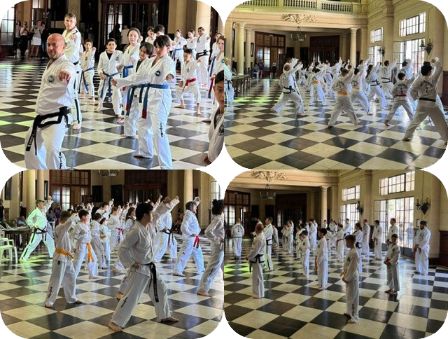

¿POR QUÉ ENTRENAR TAEKWON-DO ITF?

El Taekwon-Do es el arte marcial más popular en todo el mundo.
Se destaca por la variedad y espectacularidad de sus técnicas de patada y manos actualmente es una de las artes marciales más conocidas. Se basa fundamentalmente en artes marciales mucho más antiguas como el Taek-kyon y el Hwa-rang do coreanos y el karate-do japonés.
PRINCIPIOS DEL TAEKWON-DO
- Cortesia
- Integridad
- Autocontrol
- Perseverancia
- Espiritu Indomable